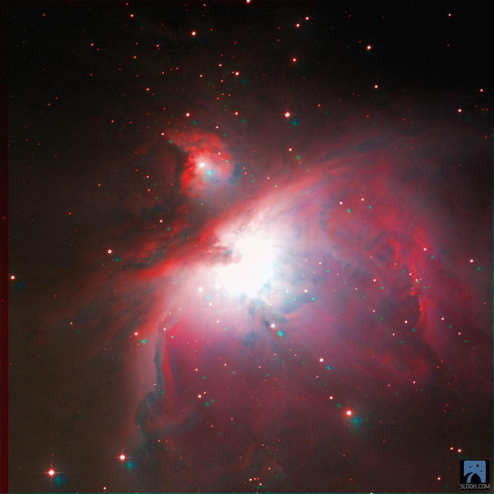
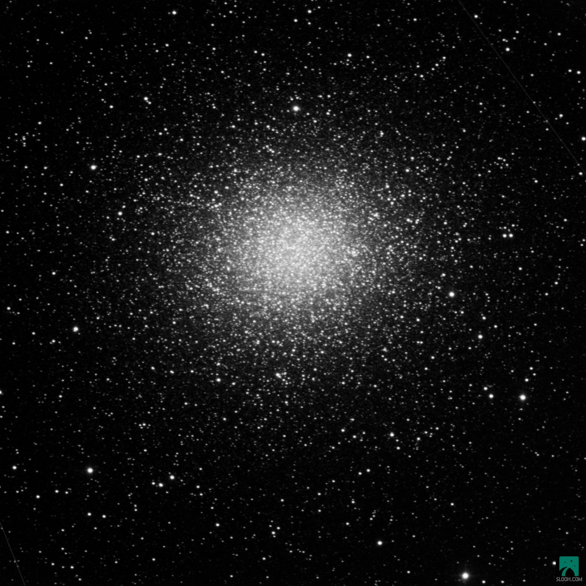
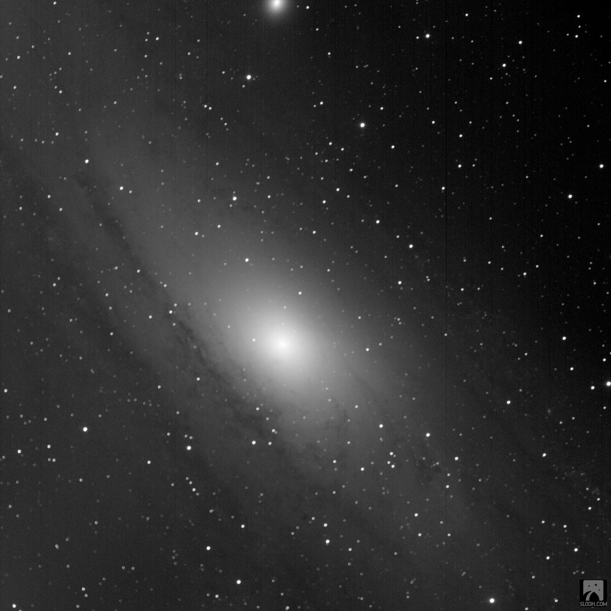
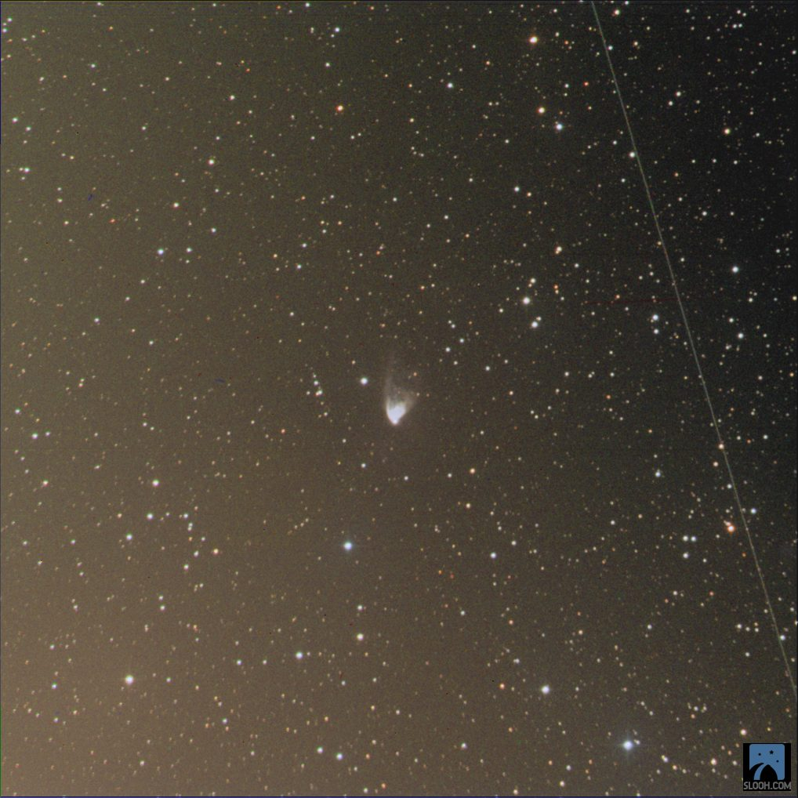
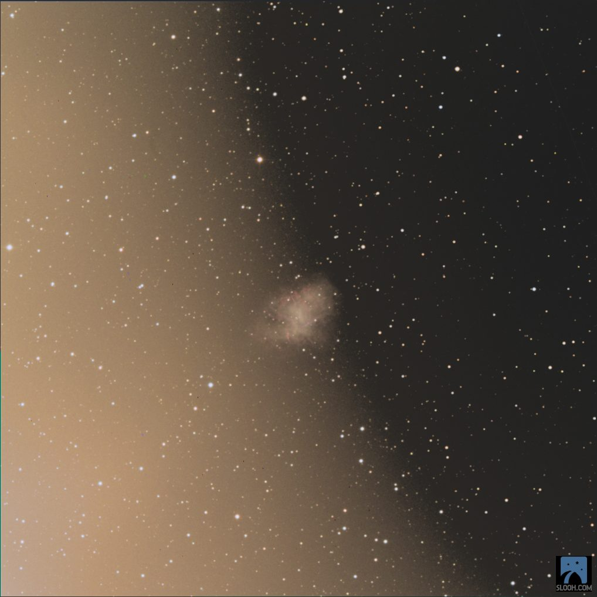
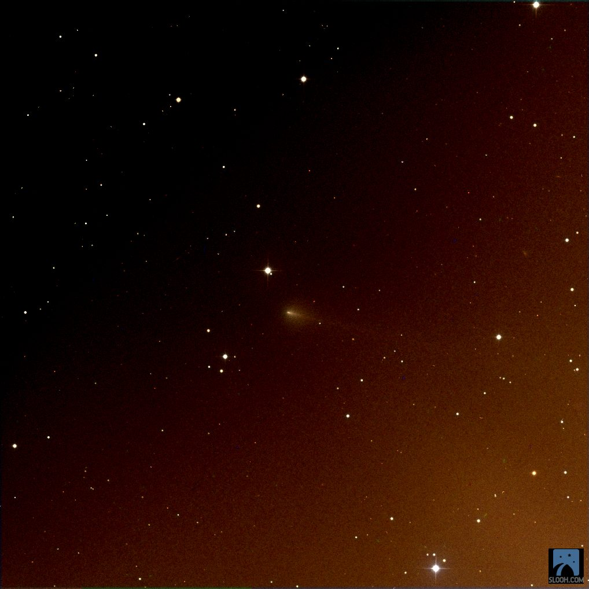
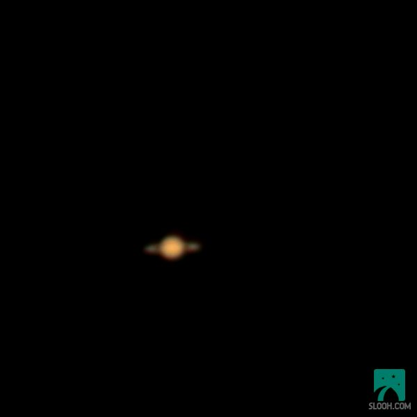

Robotic telescopes on three continents, pointed at things that were already old when the light left them. Some of these came out. The rest are here anyway, with the fault written on the label.
7 records logged · 2 nominal · 5 degraded
-
01 / 07

NominalOrion Nebula
M42- Instrument
- Canary One · Half-Meter
- Site
- Teide Observatory, Canary Islands
- Filter
- LRGB
- Captured
- 2026-09-04 06:03 UTC
The Trapezium burns out the middle of the frame and the wings of gas carry on regardless. Four filtered exposures stacked into one colour image, and the only frame in this batch that needs no apology.
-
02 / 07

NominalOmega Centauri
NGC 5139- Instrument
- Australia One · Half-Meter
- Site
- Siding Spring, New South Wales
- Filter
- L
- Captured
- 2026-09-04 08:46 UTC
Roughly ten million stars held together by their own gravity, sitting too far south for the Canary scopes to reach. Australia One caught it clean. Something in low orbit drew a thin line across the top right on its way past.
-
03 / 07

Degraded · Sensor bandingAndromeda Galaxy
M31- Instrument
- Canary Two · Wide-Field
- Site
- Teide Observatory, Canary Islands
- Filter
- L
- Captured
- 2026-09-04 02:45 UTC
Faint vertical stripes run through this one. That is the sensor, not the sky. Underneath them the dust lanes are plainly there, having crossed two and a half million light years of nothing to get here.
-
04 / 07

Degraded · Satellite transitHubble's Variable Nebula
NGC 2261- Instrument
- Canary One · Half-Meter
- Site
- Teide Observatory, Canary Islands
- Filter
- LRGB
- Captured
- 2026-09-04 06:16 UTC
A satellite crossed during the exposure and left the pale line down the right side. The nebula is the small comet-shaped smudge at centre, lit by a star that flickers, so its shape genuinely changes from one week to the next.
-
05 / 07

Degraded · GradientCrab Nebula
M1- Instrument
- Canary One · Half-Meter
- Site
- Teide Observatory, Canary Islands
- Filter
- LRGB
- Captured
- 2026-09-04 05:27 UTC
Something bright sat just outside the frame and half the picture is its glare. The remnant is the small tangled knot near the middle, all that is left of a star that Chinese astronomers watched explode in 1054.
-
06 / 07

Degraded · GradientComet 220P/McNaught
220P- Instrument
- Canary One · Half-Meter
- Site
- Teide Observatory, Canary Islands
- Filter
- LRGB
- Captured
- 2026-09-04 06:24 UTC
A colour gradient runs corner to corner and the comet is the small fuzzy streak just below centre. A dirty snowball on a roughly six-year orbit, which is the reason to keep a poor frame of it.
-
07 / 07

Degraded · Low resolutionSaturn
Sol VI- Instrument
- Australia One · Half-Meter
- Site
- Siding Spring, New South Wales
- Filter
- RGB
- Captured
- 2026-09-04 12:24 UTC
Six hundred pixels across, and about forty of them are Saturn. The rings are the two faint ears on either side of the disc. A planet this small on the sensor is really a test of whether the air was steady, and it was not.